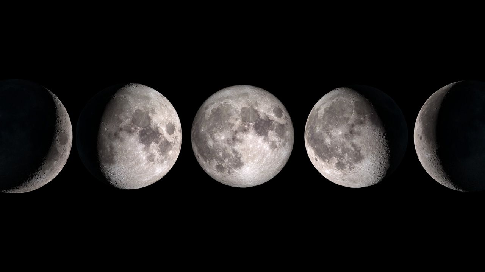
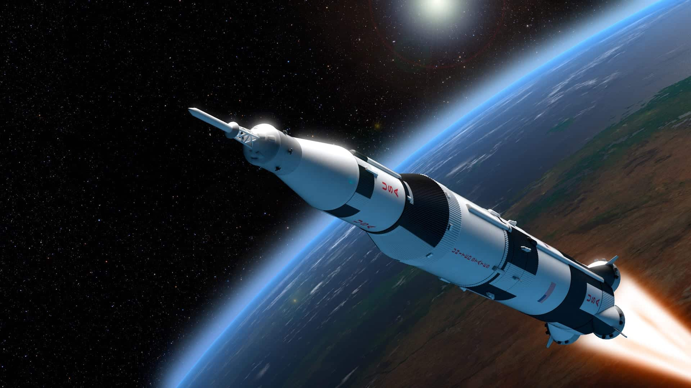

Como todos sabem, ou deveriam saber, a Lua é nosso satélite natural e, por sua vez, exerce várias funções além de ser a atração principal do céu. Sendo assim um dos elementos mais belos que voce pode ver apenas olhando para o céu á noite. Será dito mais a frente sobre relogiões onde ela esta presente e significadosnque ela pode ter, mas primeiro, alguns fatos cientificos sobre tal beleza natural.
Est parte retrata apenas sobre fatos e estudos sobre a Lua, porém é a parte mais interesante a se tratar quando falamos dela.
Começando pelo basico, a Lua está a 384.400km da Terra atualmente; e algumas funções conhecidas que ela exerce são o movimento orbital da Lua ao redor da Terra estabiliza o eixo de rotação do planeta, mantendo sua inclinação fixa em cerca de 23 graus em relação ao plano de sua órbita (essa inclinação é a responsável pela existência das estações do modo como a conhecemos).
Origem: Pesquisas dizem que a formação da Lua se deu a aproximadamente 4,5B de anos atras após uma colisão de um grande corpo celeste com o planeta Terra, causando vários detritos que com o tempo se juntaram, este processo deu origem a Lua.
Estudos sobre a Lua
"As observações e os estudos a respeito da Lua datam da Antiguidade. O satélite natural da Terra era utilizado no passado para a demarcação da passagem dos meses, o que se dava mediante o acompanhamento das suas diferentes fases, isto é, pelo processo de lunação. A curiosidade a respeito desse objeto nunca cessou, muito pelo contrário, e a superfície lunar foi a primeira a que chegou a espécie humana fora do planeta Terra.
Anterior a isso, a primeira representação cartográfica da Lua foi feita graças aos telescópios. Esse objeto foi utilizado pelo astrônomo Galileu Galilei em suas observações, com base nas quais ele realizou uma série de descobertas a respeito do satélite. Galileu foi o primeiro a identificar a presença de crateras e outras feições de relevo na Lua, fazendo uma série de desenhos que representavam a sua forma. Essas conclusões o ajudaram na descoberta das luas de Júpiter.
Foi na década de 1950 que a primeira missão espacial obteve sucesso e conseguiu chegar até a Lua. Depois de uma série de tentativas, a sonda Luna 1, do programa espacial soviético, aproximou-se da superfície lunar no ano de 1959, conseguindo obter uma série de fotos que seriam importantes para o estudo do satélite. Outras sondas foram enviadas pela União Soviética posteriormente.
Dez anos mais tarde, a missão Apollo 11, da Nasa, agência espacial estadunidense, ficou marcada na história da exploração lunar e espacial como sendo a primeira que colocou pessoas andando na superfície da Lua. Esse feito aconteceu em 20 de janeiro de 1969, e foi realizado pelos astronautas Neil Armstrong e Buzz Aldrin."
